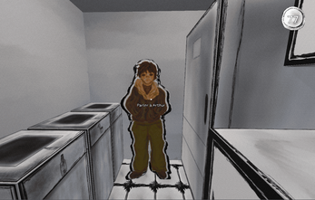
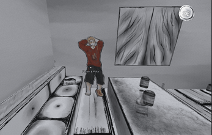
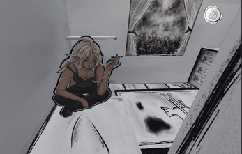

After Party : The Declic
🕹️ À propos
Après une soirée beaucoup trop réussie, l'appartement est dans un état catastrophique. Pourtant, le vrai problème n'est pas seulement le bazar, mais surtout le temps — car ton père arrive. Très bientôt. Et s'il voit ça… tu vas prendre très cher.
After Party : The Declic est un jeu narratif et interactif réalisé dans le cadre de la Code Game Jam 2026 de l'IUT Montpellier-Sète. Tu dois à la fois convaincre les derniers invités de partir, remettre de l'ordre dans l'appartement et gérer une pression qui monte à chaque seconde. Situations tendues et décisions rapides — chaque action a un impact direct sur l'issue de la partie.
🏆 Distinctions
Technologies utilisées
📸 Captures d'écran


